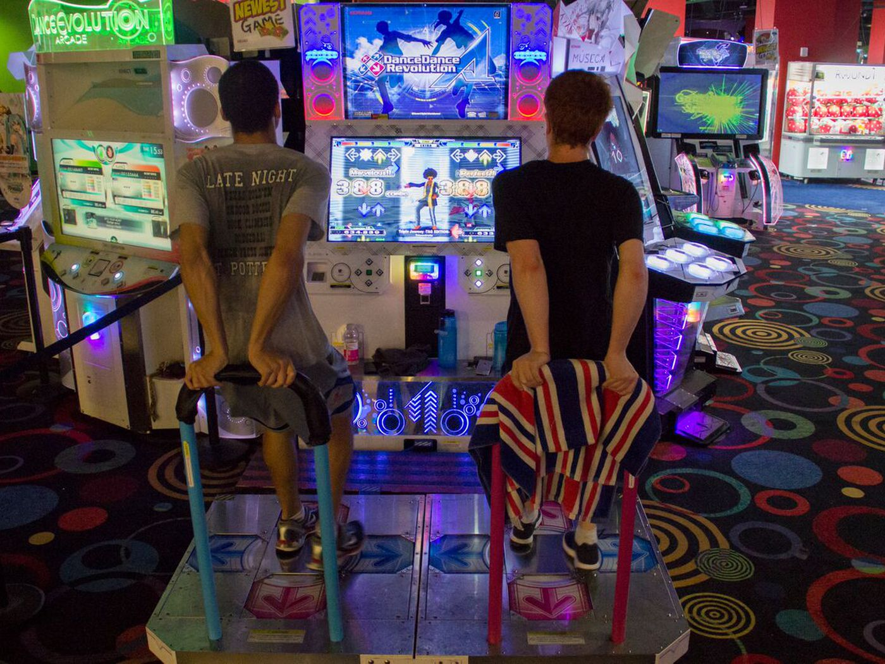
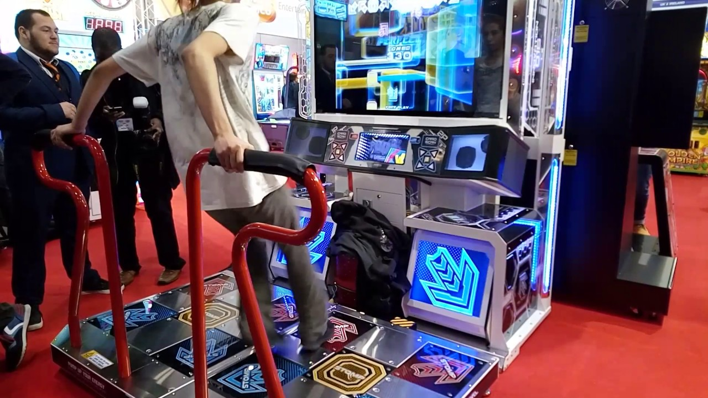
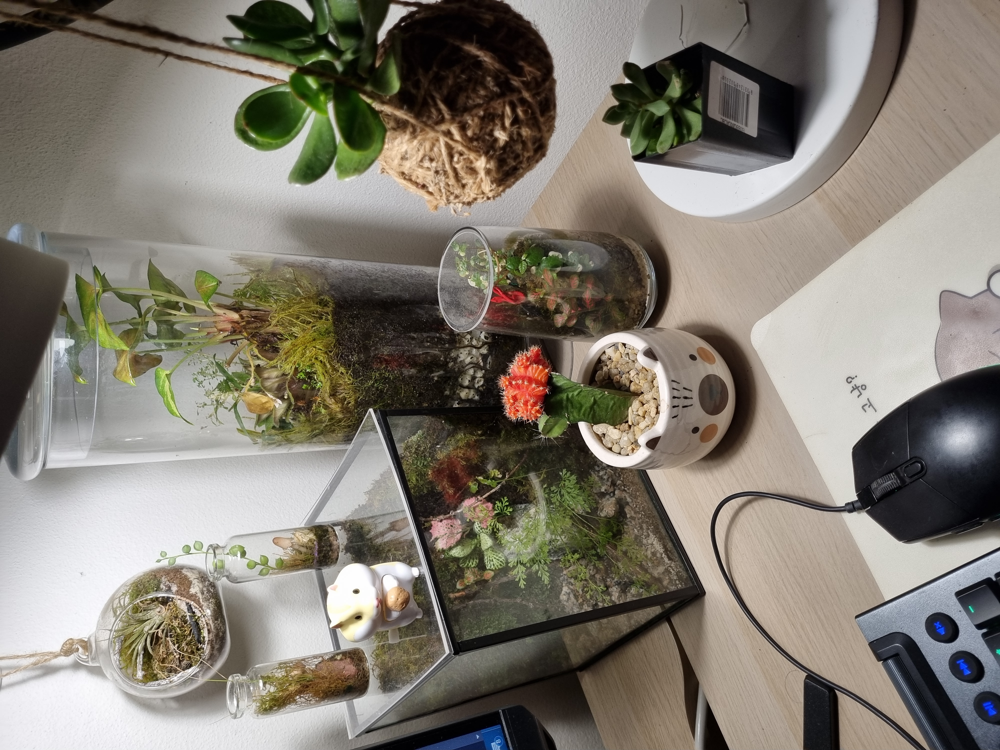

Dancing Games
Dancerush Stardom
A game where you can freely shuffle and be really cool in the eyes of onlookers at an arcade. I started playing since February 2022 - 2 months since I first came to Sydney, Australia to study. At first, I was playing another dancing game, which is Dance Dance Revolution, but I switched to practicing this since this game looks much cooler and offers much more flexibility. I also made a lot of new friends thanks to the game! Below is a video showcasing how the game looks like by friends I know at Sydney!
Dance Dance Revolution
The forsaken child, which I have abandoned in favor of Dancerush Stardom. It features a dancing pad with four buttons and you have to follow symbols on a screen that (most of the time) rhyme with a chosen song.

Pump It Up
It might look similar to Dance Dance Revolution, but this game has 5 pads instead of 4! This is actually the first dancing game I play. I first discovered this in a famous arcade in Danang, Vietnam (my homecity) when I was around 9 or 10. I played it for a couple of years and got really good, so when I came to Sydney I tried to find a machine. Unluckily, the only machine to be found in the CBD area was being fixed, so I tried playing Dance Dance Revolution and Dancerush Stardom instead.

Terrariums and Succulents

I first started buying and growing succulents because a small shop opened near my house in Danang. I slowly grew to enjoy these small, weird plants simply because they are really easy to take care of and do not take up much space. When I came to Sydney, I discovered a stall in Chinatown Nightmarket that sells really nice terrariums, so I began to invest in these as well. Similar to succulents, terrariums are relatively easy to care for, and since most of them are sealed I would not be suffocated while in my sleep (in my small room). On the side is my current collection so I hope you enjoy it!
Video Games
Pokémon
I got into Pokémon quite early by playing Ruby/Sapphire/Emerald on my cousins' Gameboy. I genuinely enjoy the different designs of all the monsters in the game and the different mechanics each game showcases. Since then, I have been following the franchise by reading comics, watching tournaments, and playing games. My favourite game to date is still Platinum, mainly I because I really like the legendary/mythical pokemons in Generation 4.
League of Legends
Honestly, the main reason I play League of Legends (LoL) was because many of my Vietnamese friends play it, so I play it as a form of socialization. I usually only watch streams of different LoL tournaments on Twitch.
Other games
Other than the two games mentioned above, I usually enjoy RPG or Roguelike games, especially games with good characterization, loot explosions, and skill trees. One notable example is Path of Exile, which features a massive number of ways to play the game. Other honorable mentions that I also enjoyed include Hades, Chronicon, the Legend of Zelda series, the Monster Hunter series, among others.